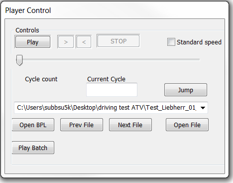
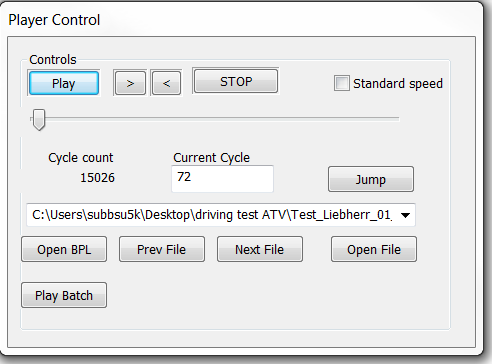

As the name suggests “Player Control” is the component which helps in controlling and playing the measurement files to visualize and analyze the recorded data from various sensors which are recorded during the recording process using test vehicle.

Above figure depicts the standard Player Control from the Framework C.Frame before the play button is activated . The player control component is the back bone of the tool as it has got more than one functionality for various purposes. The complete functionality of the controls gets activated on the press of “Play” push button in the window section.
Following figure shows the “Player Control” window with the complete activated push buttons.
Open File:
- A Push button, on the press opens the window which contains the measurement files through which desired file can be selected for playing.
Play/Pause:
- A push button, upon pressing functionality changes to “Pause” (Vice-versa).
- On the press activates “stop” button.
- On the press displays video data, CAN message information, Cameras (PME and AXIS) information and video frames (Cycle count and current cycle) information.
- On the Pause button press, navigation buttons are activated (“>” and “<”).
Cycle Count and Current Cycle:
- Cycle count is an integer value which tells the total number of video frames.
- Current cycle is an integer value which gives the current frame number which is being displayed. Current cycle is editable
Jump:
- A push button, by entering desired video frame number and on the press video display jumps to entered frame number.
Prev File:
- A push button, on the press goes to previous measurement file in the Queue
Next File:
- A push button, one the press goes to next measurement file in the queue
Open BPL:
- A push button, which is used to open the batch file (or bpl files)
Play Batch:
- A push button, used for playing batch files.
Following figure depicts the player control component with the fully activated buttons when the play button is pressed.
